1과목: 심리학개론
1. 다음은 무엇에 관한 설명인가?
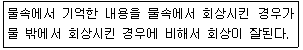
2. 호감에 영향을 미치는 요인과 가장 거리가 먼 것은?
3. 뉴런이 휴식기에 있을 때의 상태로 옳은 것은?
4. Freud의 발달이론에서 오이디푸스 갈등을 경험하는 시기는?
5. Ainsworth의 낮선 상황 실험에서 낮선 장소에서 어머니가 사라졌을 때 걱정하는 모습을 약간 보이다가 어머니가 돌아왔을 때 어머니를 피하는 아이의 애착 유형은?
6. Freud의 세 가지 성격 구성요소 중 현실원리를 따르는 것은?
7. 혼자 있을 때 보다 옆에 누가 있을 때 과제의 수행이 더 우수한 것을 일컫는 현상은?
8. 잔인한 아버지가 자식을 무자비하게 때리면서 매질이 자식을 위한 것으로 확신하고 있다고 하는 것처럼, 자기 자신의 감정이나 행위를 보다 허용 가능한 것으로 해석하는 방어기제는?
9. 놀이방에서 몇 명의 아동에게 몇 가지 인형을 주어 노는 방법의 변화를 1주일에 1시간씩 관찰하는 연구방법은?
10. 연결망을 통해 원하는 만큼 많은 수의 표본을 추출하는 방법은?
11. 아동으로 하여금 매일 아침 자신의 침대를 정리하도록 하는데 효과가 있는 것을 모두 고른 것은?
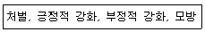
12. Maslow의 5단계 욕구 중 “금강산도 식후경”이라는 속담의 의미와 일치하는 욕구는?
13. 무작위적 반응 중에서 긍정적 결과가 뒤따르는 반응들을 통해서 행동이 증가하는 학습법칙은?
14. 두 변인 간의 높은 정적 상관을 보이는 산포도의 형태는?
15. 통계적 검증력이 증가하는 경우는?
16. 강화계획 중 소거에 대한 저항이 가장 큰 것은?
17. 방어기제와 그 예가 틀리게 짝지어진 것은?
18. 겉맞추기(matching) 현상과 관련된 매력의 결정요인은?
19. 기억 정보의 인출에 대한 설명으로 옳은 것은?
20. 특질을 기본적인 특질과 부수적인 특질로 구분하는 경우, 기본적인 특질에 해당하지 않은 것은?
2과목: 이상심리학
21. 알츠하이머병으로 인한 신경인지장애에 관한 설명으로 틀린 것은?
22. 알코올 금단에 대한 설명으로 틀린 것은?
23. 이상행동의 설명모형 중 통합적 입장에 해당하는 것은?
24. 다음 ()에 알맞은 증상은?
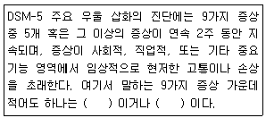
25. DSM-5 사회공포증 진단 기준이 틀린 것은?
26. 이상심리학의 역사에 대한 설명으로 옳은 것은?
27. 70세가 넘은 할아버지가 기억력 저하를 호소한다. 가장 가능성이 적은 문제는?
28. 도박장애는 DSM-5의 어느 진단 범주에 속하는가?
29. 타인에 대한 강한 불신과 의심을 가지고 적대적인 태도를 나타내어 사회적 부적응을 나타내는 성격특성을 지닌 것은?
30. 다음 중 정신장애에 대한 사회문화적 치료와 가장 거리가 먼 것은?
31. 주의력결핍 과잉행동 장애(ADHD)에 대한 설명으로 가장 적절하지 않은 것은?
32. 강간, 폭행, 교통사고, 자연재해. 가족이나 친구의 죽음 등 충격적 사건에 뒤따라 침습증상, 지속적 회피, 인지와 감정의 부정적 변화ㅡ 각성과 반응성의 뚜렷한 변화 등이 나타나는 심리적 장애는?
33. 경계성 성격장애의 치료에 대한 설명으로 틀린 것은?
34. 조현병의 증상 중 의지결여, 정서의 메마름, 언어빈곤, 사회적 철회 등은 다음 중 무엇에 해당하는가?
35. 우울증의 원인론에 관한 설명으로 틀린 것은?
36. 신경발달장애에 해당하지 않는 것은?
37. 급식 및 섭식장애에서 부적절한 보상행동에 포함되는 것은?
38. 조현병의 좋은 예후 요인을 모두 고른 것은?
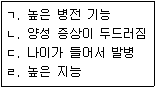
39. 성별 불쾌감에 대한 설명으로 틀린 것은?
40. 다음에 제시된 장애유형 중 같은 유형으로 모두 묶은 것은?
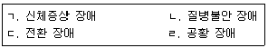
3과목: 심리검사
41. 스탠포드-비네 지능검사에 대한 설명으로 틀린 것은?
42. MMPI-2내용척도 CYN의 설명과 가장 거리가 먼 것은?
43. 뇌손상의 영향에 관한 설명으로 가장 적합한 것은?
44. 다음 K-WAIS 검사 결과가 나타내는 정신장애로 가장 적합한 것은?
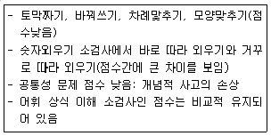
45. 표준화된 검사가 다른 검사에 비하여 객관적인 해석을 가능하게 해주는 이유로 가장 적합한 것은?
46. Rorschach 검사의 질문단계에서 검사자의 질문 또는 반응으로 가장 적절하지 않은 것은?
47. MMPI-2에서 4-6코드의 대표적인 특성으로 옳은 것은?
48. 조직에서 직원을 선발할 때 적성검사를 사용하는 경우, 적성검사의 준거관련타당도는 어떻게 구하는 것이 가장 바람직한가?
49. MMPI-2에서 임상척도의 중요성을 평가할 때 고려할 사항과 가장 거리가 먼 것은?
50. 실행적 기능(executive function)을 담당하는 뇌 부위가 손상된 환자에 대한 평가결과와 가장 거리가 먼 것은?
51. WAIS-IV의 연속적인 수준 해석 절차의 2단계는?
52. 신경인지장애가 의심되는 노인 환자를 대상으로 실시하기에 적합하지 않은 검사는?
53. 아동용 시지각-운동통합의 발달검사로, 24개의 기하학적 형태의 도형으로 이루어진 지필검사는?
54. 지능이론에 대한 설명으로 옳은 것은?
55. 노인을 대상으로 HTP 검사를 실시하는 방법으로 옳은 것은?
56. 발달검사의 특징에 관한 설명으로 옳은 것은?
57. MMPI의 타당도 척도 중 평가하는 내용이 나머지와 다른 하나는?
58. Guilford의 지능구조(Structure of Intellect, SOI) 3요소가 아닌 것은?
59. MMPI-2에서 타당성을 고려할 때 “?” 지표에 대한 설명으로 틀린 것은?
60. K-WISC-IV를 통해 일반능력을 알아볼 수 있는 소검사끼리 바르게 묶인 것은?
4과목: 임상심리학
61. 건강심리학 분야의 초점 영역과 가장 거리가 먼 것은?
62. 아동을 상담할 때 일반적으로 고려해야 할 사항과 가장 거리가 먼 것은?
63. 지역사회 심리학에서 지향하는 바가 아닌 것은?
64. 심리치료 장면에서 치료자의 3가지 기본 특성 혹은 태도가 강조된다. 이는 인간중심심리치료의 기본적 치료 기제로도 알려져 있는데, 이러한 치료자의 기본 특성에 해당되지 않는 것은?
65. 임상심리학자의 윤리에 관한 일반원칙 중 다음에 해당하는 것은?
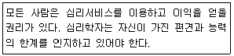
66. Dougherty가 정의한 임상심리학자들의 6가지 공통적인 자문 역할에 해당하지 않는 것은?
67. 심리치료기법에서 해석에 관한 설명으로 적절하지 못한 것은?
68. 정신건강의학과 병동에 입원한 환자들 중 단체생활의 규칙을 잘 지키지 않는 환자들의 행동문제들을 개선하는데 가장 효과적인 치료적 접근은?
69. 1950년대 이후 정신역동적 접근에 대한 대안적 접근들이 임상심리학에 많은 영향을 주었다. 이와 가장 관련이 적은 것은?
70. 자해 행동을 보이는 아동에 대한 심리평가로 가장 적합한 것은?
71. 다음 중 혐오치료를 적용하기에 가장 적합한 장애는?
72. 다음에 제시된 방어기재 중 Vaillant의 성숙한 방어에 해당하지 않는 것은?
73. 다음은 어떤 치료에 대한 설명인가?
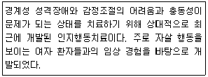
74. 원판 MMPI에 관한 설명으로 가장 거리가 먼 것은?
75. 투과검사의 일반적인 특성이 아닌 것은?
76. DSM-5에 관한 설명으로 옳은 것은?
77. 일반적으로 의미적 인출(semantic retrieval)및 일화적 부호화(episodic encoding)를 담당하는 곳은?
78. 다음은 어떤 조건형성에 해당하는가?
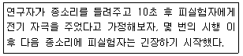
79. 행동평가 방법 중 참여관찰법에 비교할 때 비참여 관찰법의 특성과 가장 거리가 먼 것은?
80. 평가자간 신뢰도를 알아보기 위한 지표로 사용되지 않는 것은?
5과목: 심리상담
81. 청소년 상담에서 특히 고려해야 할 요인과 가장 거리가 먼 것은?
82. AA(Alcoholic Anonymous)에서 이루어지는 활동의 대표적인 특징은?
83. 사이버상담에 대한 설명으로 틀린 것은?
84. 학습문제 상담의 시간관리전략에서 강조하는 것은?
85. 상담의 초기단계에서 다루어야 할 내용과 가장 거리가 먼 것은?
86. Rogers의 인간중심 상담에 대한 설명으로 틀린 것은?
87. 상담자가 내담자를 직면시키기에 바람직한 시기가 아닌 것은?
88. 다음 사례에서 사용된 상담기법은?
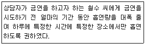
89. Adler 상담이론의 주요 개념이 아닌 것은?
90. 상담에서 나타날 수 있는 윤리적 갈등의 해결단계를 바르게 나열한 것은?
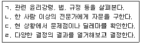
91. 집단상담의 후기 단계에서 주어지는 피드백에 대한 설명으로 틀린 것은?
92. 성피해자에 대한 심리치료 과정 중 초기 단계에서 상담자가 유의해야 할 사항과 가장 거리가 먼 것은?
93. 진로상담의 목표와 가장 거리가 먼 것은?
94. 다음 설명에서 해당하는 Golan의 위기단계는?
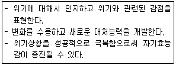
95. 다음 중 상담의 바람직한 목표설정 방향과 가장 거리가 먼 것은?
96. 게슈탈트 상담에 대한 설명으로 틀린 것은?
97. 다음에 제시된 집단상담 경험에 해당하는 치료적 요인은?
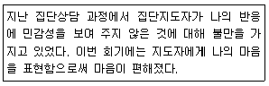
98. 처벌을 사용할 때 고려해야 할 사항이 아닌 것은?
99. 기본적 오류에 대한 옳은 설명을 모두 고른 것은?
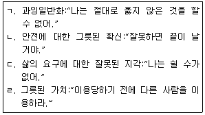
100. 단기상담에 적합한 내담자의 특성으로 옳은 것은?